Отбеливание
Светлее и чище без перегруза обработкой.
Реальные работы наших врачей. Фотопротокол «до» и «после», описание клинической ситуации, использованные материалы. Все пациенты дали согласие на публикацию. Жители Ворсмы знают: качественную стоматологию рядом с домом найти было непросто. BORC закрывает этот пробел — современная клиника европейского уровня в шаговой доступности.
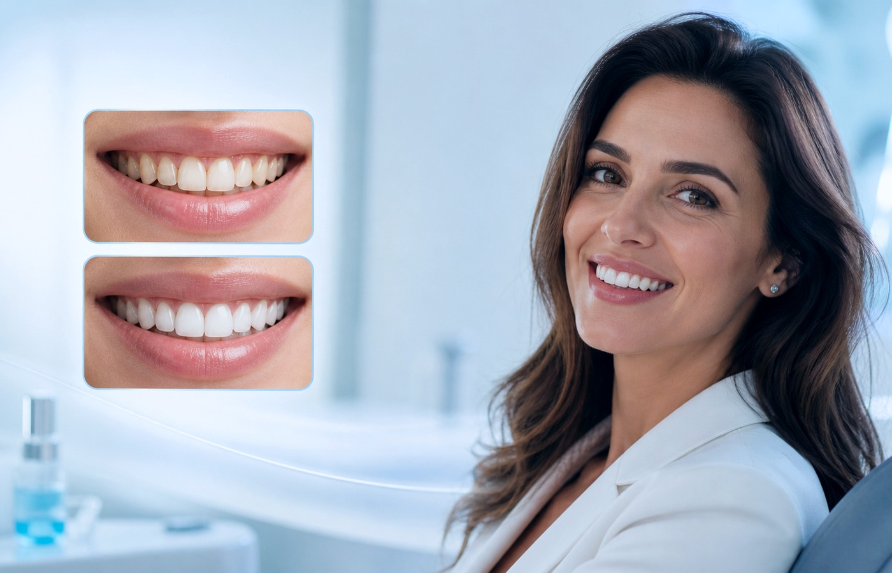
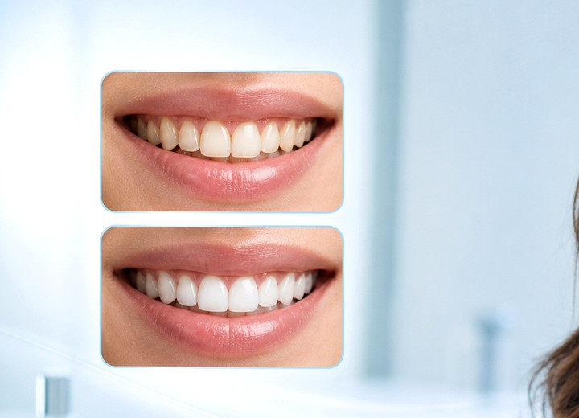
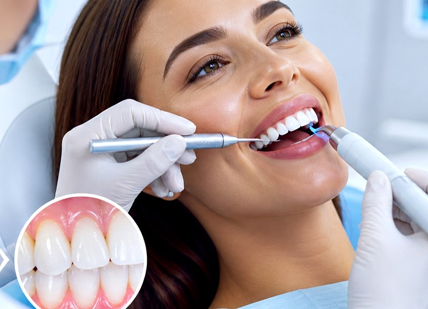
Сайт лучше продаёт, когда пациент видит реальный эффект на улыбке и эстетике зубов.
Светлее и чище без перегруза обработкой.
Закрываем сколы и выравниваем линию улыбки.
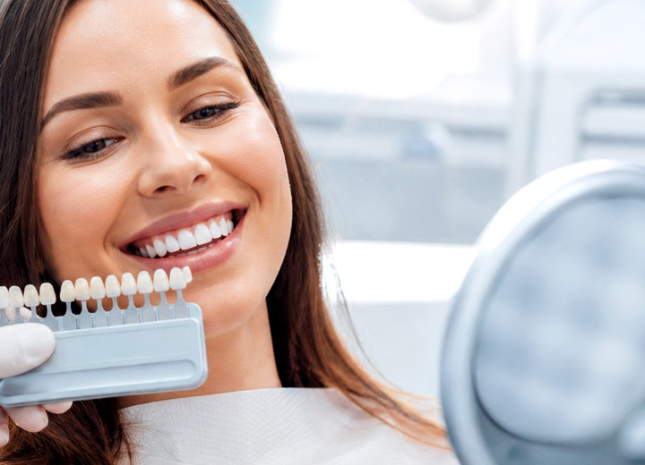
От функции до эстетики в одном результате.
Все кейсы — реальные. Фото размещены с согласия пациентов.

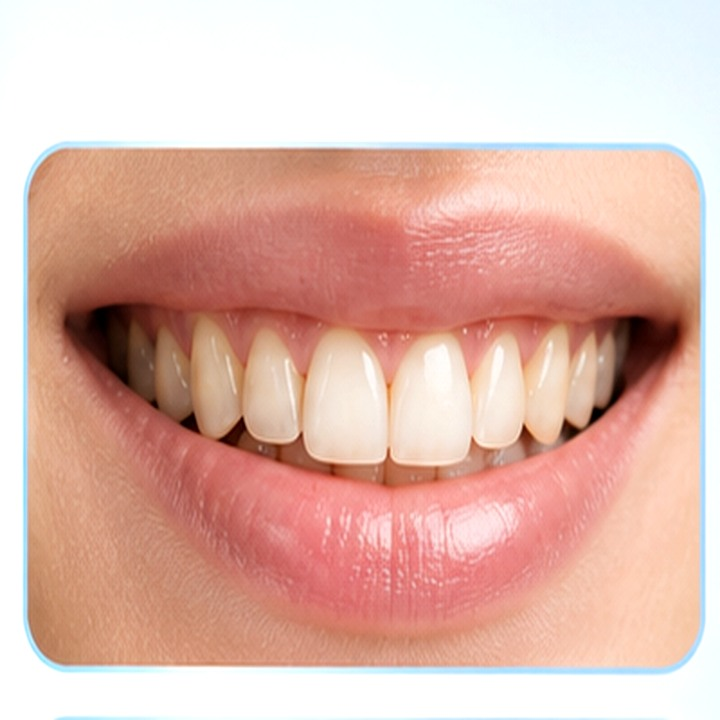
Восстановление 36 и 37 зубов имплантами Straumann + циркониевые коронки. 4 месяца от снимка до коронок.


Полное восстановление зубного ряда (метод All-on-4). От первого визита до жевания твёрдой пищи — 1 день.
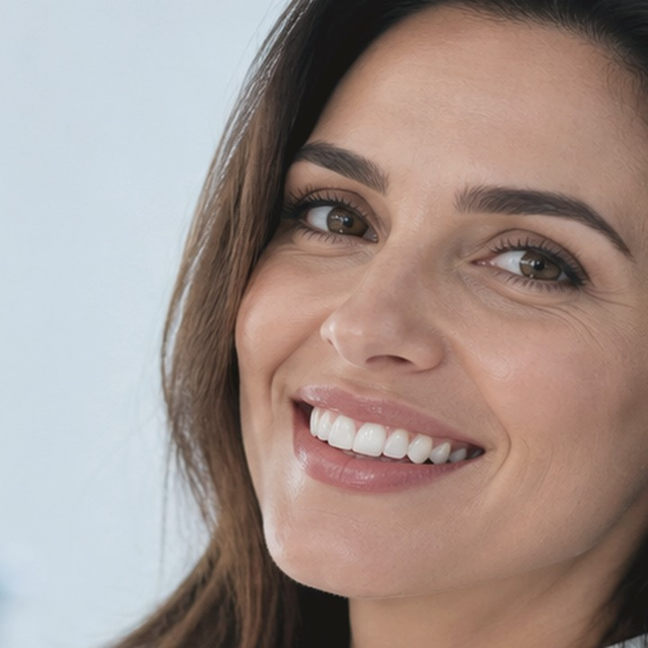

Hollywood smile: 8 виниров на верхние передние зубы. Без обточки «под ноль».
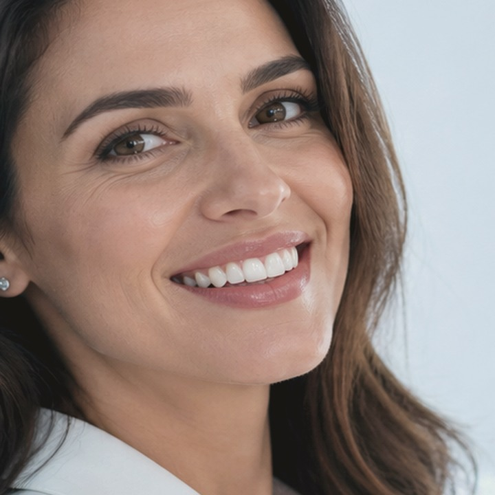
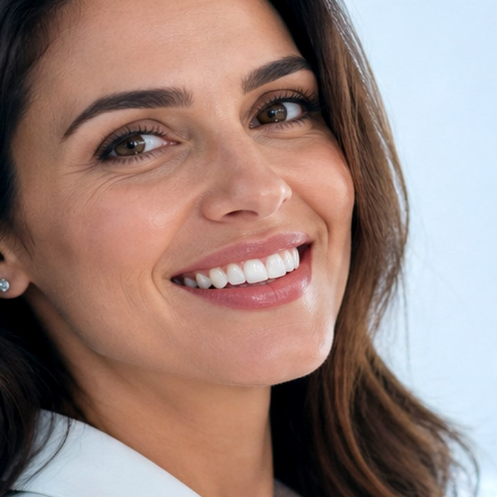
3 канала, ретреатмент после неудачного лечения в другой клинике.
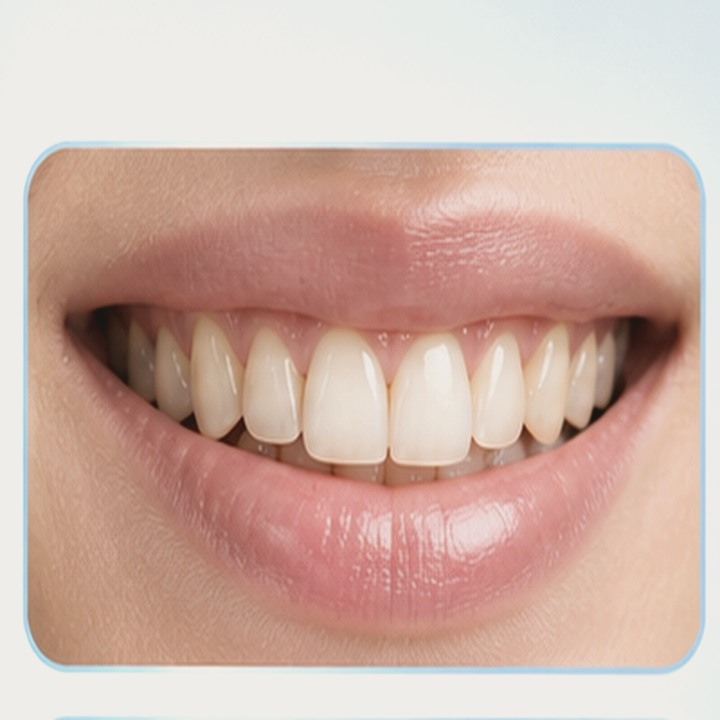

Исправление скученности нижнего ряда. Керамические брекеты для эстетики.
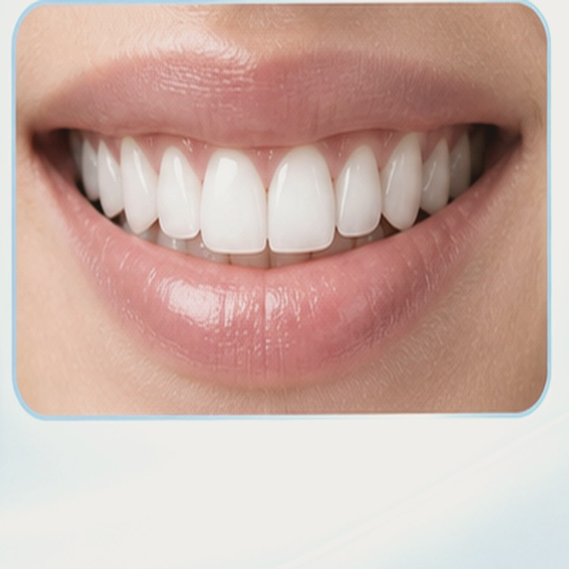
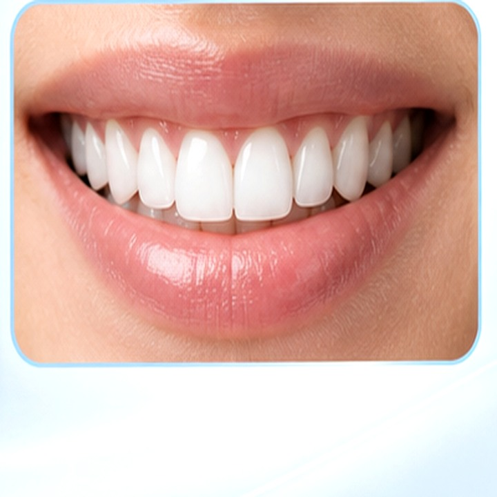
Снятие зубного камня + аппаратное отбеливание на 6 тонов за 1 визит.

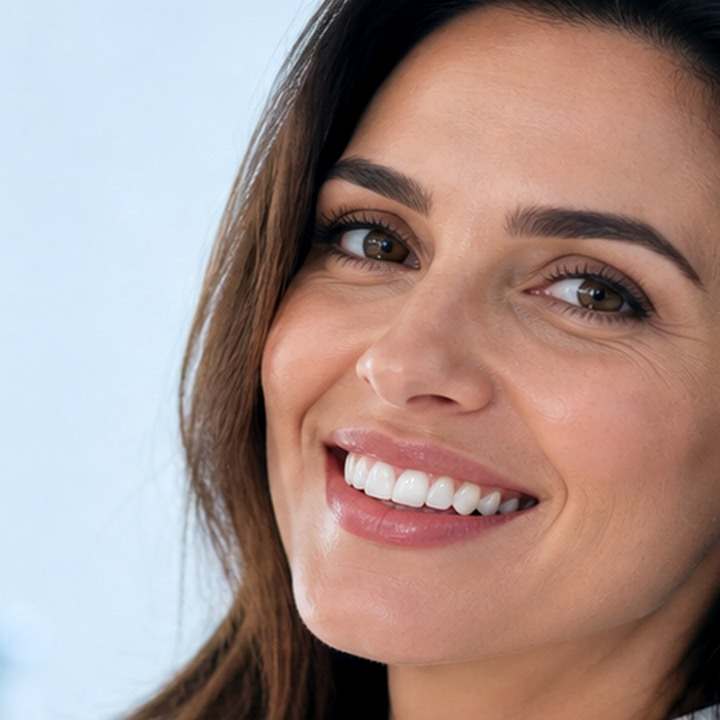
Восстановление после неудачного протезирования металлокерамикой 10 лет назад.


Исправление прикуса у пациентки 38 лет. Незаметно для коллег и семьи.
«Я была в шоке от того, что осталось от зубов после 20 лет курения. Сергей Игоревич сделал план на 6 месяцев — имплантация, виниры, гигиена. Сейчас улыбаюсь как с обложки, и даже подруги из Ворсмы спрашивают, где так сделали.»
От Дома культуры — 5 минут пешком по ул. Ленина в сторону Павлово. Со стороны Павловского шоссе — поворот направо у светофора, парковка во дворе.
Принимаем пациентов из районов: ул. Ленина, ул. Энгельса, ул. Гагарина, мкр. Заречный, мкр. Новинки.
Ориентиры: озеро Ворсменское, Островоезерский монастырь, ДК Ворсмы.
Чем сильнее визуальная разница, тем проще посетителю представить свой результат.
Запишитесь на бесплатную консультацию — обсудим вашу ситуацию, покажем похожие кейсы, составим план.